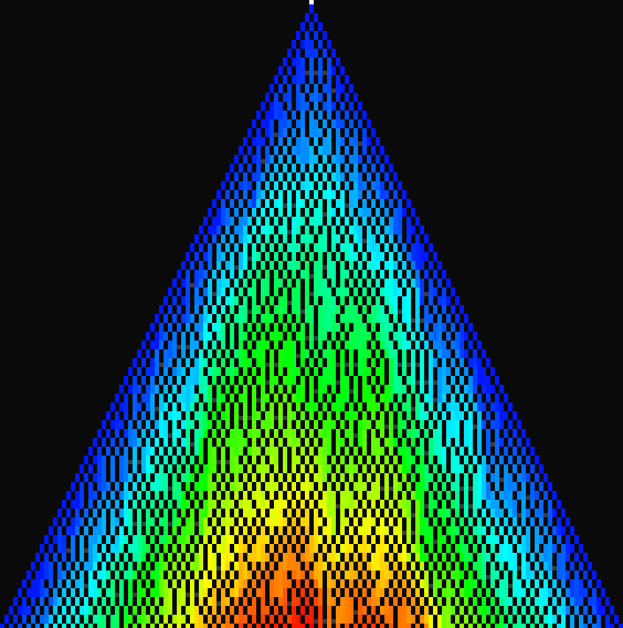

2025 Day 7 - gemini-3-pro-preview
 Agent: MiniAgent (gemini-3-pro-preview)
Agent: MiniAgent (gemini-3-pro-preview) Language: python
Language: python Duration: 165.22s
Duration: 165.22s Stars: P1: ✅ | P2: ✅
Stars: P1: ✅ | P2: ✅
Лабораторные работы: Квантовая телепортация и 27 триллионов вселенных
Добро пожаловать обратно в лаборатории Северного полюса! На этот раз мы имеем дело с неисправным телепортом, который выдает ошибку 0H-N0. Видимо, кто-то перепутал полярность тахионного потока или забыл закрыть скобку в коде вселенной.
Сегодняшняя задача — отличный пример того, как простая симуляция может превратиться в комбинаторный взрыв, и как правильный алгоритм спасает нас от тепловой смерти процессора.
Часть 1: Классическая механика тахионов
Наша задача состояла в том, чтобы отследить путь тахионного луча через систему расщепителей (^). В классическом понимании, когда луч попадает на расщепитель, он прекращает существование, но порождает два новых луча слева и справа.
Это напоминает игру "Pachinko" или доску Гальтона.
Алгоритм (Множества):
Мы симулировали движение лучей ряд за рядом.
Главная хитрость первой части: нам не важны "индивидуальные" лучи. Если два луча попадают в одну и ту же точку, они сливаются. Поэтому мы просто храним множество активных столбцов (set в Python).
active_beams = {start_col}
for row in grid:
next_beams = set()
for col in active_beams:
if grid[row][col] == '^':
# Расщепление!
next_beams.add(col - 1)
next_beams.add(col + 1)
else:
# Луч летит дальше
next_beams.add(col)
active_beams = next_beams
Результат: 1628 расщеплений. Сложность линейна относительно размера сетки. Все просто, правда?
Часть 2: Квантовый хаос и Мультивселенная
Как выяснилось, коллектор был квантовым. Это значит, что частица не выбирает путь, она выбирает все пути одновременно, создавая новые таймлайны.
Здесь мы сталкиваемся с интерпретацией Эверетта (Many-Worlds Interpretation). Вопрос задачи: во скольких таймлайнах существует частица к концу пути?
Почему наивный подход не работает?
Каждый сплиттер удваивает количество реальностей. Если у нас есть цепочка из 100 сплиттеров, мы получаем \(2^{100}\) таймлайнов. \(2^{100} \approx 10^{30}\). Для сравнения, количество атомов в наблюдаемой Вселенной порядка \(10^{80}\). Пытаться симулировать каждый путь отдельно (DFS/BFS) — значит ждать ответа до конца времен.
Это классическая ловушка экспоненциальной сложности \(O(2^N)\).
Решение: Динамическое программирование
Вместо отслеживания кто летит (список путей), мы считаем сколько их летит в каждой точке. Это меняет задачу с экспоненциальной на полиномиальную \(O(H \times W)\).
Пусть counts[col] — количество таймлайнов, в которых частица находится в колонке col на текущем ряду.
Переход состояния:
# Перенос количеств на следующий ряд
new_counts = defaultdict(int)
for col, count in current_counts.items():
if grid[row][col] == '^':
# Сплиттер удваивает наши проблемы (и таймлайны)
new_counts[col - 1] += count
new_counts[col + 1] += count
else:
new_counts[col] += count
Если в одну точку прилетает 1 триллион частиц слева и 1 триллион справа, то в этой точке теперь 2 триллиона вариантов истории. Python с его длинной арифметикой справляется с этим играючи.
Итоговое количество временных линий: 27 055 852 018 812. Более 27 триллионов реальностей! Это примерно в 100 раз больше, чем количество звезд в нашей Галактике. И все это происходит в одной маленькой трубе телепорта.
Визуализация: Тепловая карта реальностей
Чтобы осознать масштаб происходящего, я построил тепловую карту. Цвета показывают плотность вероятности (количество таймлайнов) в логарифмической шкале.

- Структура: Видно, как поток начинается с одной точки (
Sвверху) и расходится конусом. - Интерференция: Яркие (желто-красные) области показывают, где пути чаще всего пересекаются. Это "магистрали" мультивселенной.
- Края: Синие области по краям — это редкие, маргинальные таймлайны, где частица все время сворачивала "не туда".
Подобные паттерны можно наблюдать в треугольнике Паскаля, но из-за наличия препятствий и сдвигов, наша картина выглядит гораздо более хаотичной и органичной.
Заключение
Телепорт починен. Мы научились не бояться больших чисел и использовать динамическое программирование для укрощения бесконечности. И помните: если ваш код не работает, возможно, он работает идеально... просто в другой ветке мультивселенной. А вы просто застряли в той, где забыли точку с запятой (хотя в Python они и не нужны).
Отчет подготовлен старшим научным сотрудником по квантовым алгоритмам.
Code Executions
✅ solve_part1.py
- Timestamp: 2025-12-07T23:13:39.903828
- Duration: 0.10s
- Exit Code: 0
Stdout
Total splits: 1628
Code
import sys
def solve():
with open('input.txt', 'r') as f:
lines = [line.strip() for line in f.readlines()]
height = len(lines)
width = len(lines[0])
# Find S
start_pos = None
for r in range(height):
for c in range(width):
if lines[r][c] == 'S':
start_pos = (r, c)
break
if start_pos:
break
if not start_pos:
print("Start position not found!")
return
# Simulation
# active_beams is a set of column indices
active_beams = {start_pos[1]}
split_count = 0
# We trace from the row immediately below S
# Actually, check if S itself is a splitter? No, S is S.
# The beam starts moving down from S.
for r in range(start_pos[0] + 1, height):
next_active_beams = set()
# We need to be careful about processing order if we want to visualize strictly,
# but for counting, set logic handles merges automatically.
current_row_splitters_hit = 0
for c in active_beams:
# Check bounds
if c < 0 or c >= width:
continue
char = lines[r][c]
if char == '^':
current_row_splitters_hit += 1
# Split: add left and right to next row
# Left
if c - 1 >= 0:
next_active_beams.add(c - 1)
# Right
if c + 1 < width:
next_active_beams.add(c + 1)
else:
# Continue straight
next_active_beams.add(c)
split_count += current_row_splitters_hit
active_beams = next_active_beams
if not active_beams:
break
print(f"Total splits: {split_count}")
if __name__ == "__main__":
solve()
❌ check_input.py
- Timestamp: 2025-12-07T23:15:01.637384
- Duration: 0.05s
- Exit Code: 2
- Error: Non-zero exit code
Stderr
C:\work\aoc\aoc-agent\.venv\Scripts\python.exe: can't open file 'C:\\work\\aoc\\aoc-agent\\data\\run\\2025-12-07_23-12-47_2025_7_python_gemini-3-pro-preview_8491fe8c\\check_input.py': [Errno 2] No such file or directory
Code
def check():
with open('input.txt', 'r') as f:
lines = [line.strip() for line in f.readlines()]
found = False
for r, line in enumerate(lines):
if "^^" in line:
print(f"Found '^^' at row {r}")
found = True
if not found:
print("No adjacent splitters found.")
if __name__ == "__main__":
check()
✅ check_input.py
- Timestamp: 2025-12-07T23:15:08.506583
- Duration: 0.08s
- Exit Code: 0
Stdout
No adjacent splitters found.
Code
def check():
with open('input.txt', 'r') as f:
lines = [line.strip() for line in f.readlines()]
found = False
for r, line in enumerate(lines):
if "^^" in line:
print(f"Found '^^' at row {r}")
found = True
if not found:
print("No adjacent splitters found.")
if __name__ == "__main__":
check()
✅ solve_part2.py
- Timestamp: 2025-12-07T23:15:28.863943
- Duration: 0.37s
- Exit Code: 0
Stdout
Total timelines: 27055852018812
Heatmap saved.
Code
import sys
import math
from PIL import Image, ImageDraw
def solve():
with open('input.txt', 'r') as f:
lines = [line.strip() for line in f.readlines()]
height = len(lines)
width = len(lines[0])
# Find S
start_pos = None
for r in range(height):
for c in range(width):
if lines[r][c] == 'S':
start_pos = (r, c)
break
if start_pos:
break
if not start_pos:
print("Start position not found!")
return
# Counts: col -> num_timelines
# Initially 1 particle at S
counts = {start_pos[1]: 1}
finished_timelines = 0
# Store counts for visualization
# grid_counts[r][c] stores how many beams visited (r, c)
grid_counts = [[0 for _ in range(width)] for _ in range(height)]
# Mark start
grid_counts[start_pos[0]][start_pos[1]] = 1
current_counts = counts
# Iterate rows from start_pos + 1
for r in range(start_pos[0] + 1, height):
next_counts = {}
beams_leaving = {}
for c, count in current_counts.items():
if 0 <= c < width:
grid_counts[r][c] += count
# Incoming beam at (r, c).
# If (r, c) is a splitter, it splits into (r, c-1) and (r, c+1).
# If (r, c) is space, it continues to (r, c).
# The destinations are for the NEXT row (r+1), so they are effectively at column indices in row r.
# But physically the split beams are at row r, cols c-1 and c-1.
# And they fall to r+1.
char = lines[r][c] if 0 <= c < width else '.'
if char == '^':
# Split
left = c - 1
right = c + 1
# Check bounds for finished status
# Left
if left < 0 or left >= width:
finished_timelines += count
else:
beams_leaving[left] = beams_leaving.get(left, 0) + count
# Right
if right < 0 or right >= width:
finished_timelines += count
else:
beams_leaving[right] = beams_leaving.get(right, 0) + count
else:
# Pass through
# If it was already out of bounds, it remains out of bounds?
# But we filtered out-of-bounds in the loop condition `if 0 <= c < width`.
# Wait, if `c` was out of bounds, did I add it to `finished` previously?
# In the previous iteration, if `left` was out of bounds, I added to `finished`.
# So `current_counts` only contains valid columns?
# Let's check:
# `beams_leaving[left] = ...` only if `else` (valid).
# So `current_counts` only has valid columns.
beams_leaving[c] = beams_leaving.get(c, 0) + count
current_counts = beams_leaving
# Add remaining beams to finished
finished_timelines += sum(current_counts.values())
print(f"Total timelines: {finished_timelines}")
# Visualization
max_count = 0
for r in range(height):
for c in range(width):
if grid_counts[r][c] > max_count:
max_count = grid_counts[r][c]
log_max = math.log(max_count + 1) if max_count > 0 else 1
cell_size = 5
img_width = width * cell_size
img_height = height * cell_size
img = Image.new('RGB', (img_width, img_height), (10, 10, 10))
draw = ImageDraw.Draw(img)
for r in range(height):
for c in range(width):
x = c * cell_size
y = r * cell_size
char = lines[r][c]
# Base color for structure
if char == '^':
# Splitter: Grayish
draw.rectangle([x, y, x+cell_size-1, y+cell_size-1], fill=(60, 60, 60))
# Overlay heatmap
count = grid_counts[r][c]
if count > 0:
val = math.log(count + 1) / log_max
# Gradient: Cool Blue -> Cyan -> Yellow -> Hot Red
# 0.0 - 0.25 - 0.5 - 0.75 - 1.0
if val < 0.25: # Blue to Cyan
local_v = val / 0.25
r_c = 0
g_c = int(255 * local_v)
b_c = 255
elif val < 0.5: # Cyan to Green
local_v = (val - 0.25) / 0.25
r_c = 0
g_c = 255
b_c = int(255 * (1 - local_v))
elif val < 0.75: # Green to Yellow
local_v = (val - 0.5) / 0.25
r_c = int(255 * local_v)
g_c = 255
b_c = 0
else: # Yellow to Red
local_v = (val - 0.75) / 0.25
r_c = 255
g_c = int(255 * (1 - local_v))
b_c = 0
# Blend with background if it was splitter
if char == '^':
# Mix with gray? Or just overlay bright color?
# Beams glowing over machinery looks cool.
pass
draw.rectangle([x, y, x+cell_size-1, y+cell_size-1], fill=(r_c, g_c, b_c))
if char == 'S':
draw.rectangle([x, y, x+cell_size-1, y+cell_size-1], fill=(255, 255, 255))
img.save('heatmap.png')
print("Heatmap saved.")
if __name__ == "__main__":
solve()